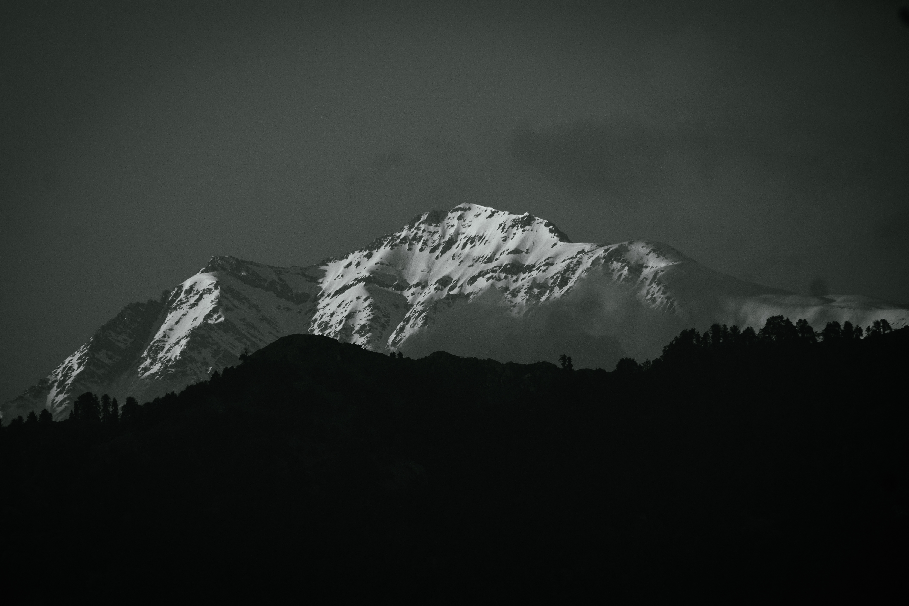

Bir-Billing
Bir is a rural village located in the west of Joginder Nagar Valley in the state of Himachal Pradesh in northern India. It's the paragliding capital of India and the location of the Bir Tibetan Colony, founded in the early 1960s as a settlement for Tibetan refugees after the 1959 Tibetan uprising. Bir is noted for several Tibetan Buddhist monasteries and supportive centres of the Nyingma school, the Karma Kagyu school, and the Sakya school, located either in the town of Bir or nearby. A large stupa is also located in Bir. Ecotourism, spiritual studies, and meditation draws visitors.
Chokling Monastery

Landing site Bir-Billing

Dhauladhar mountains Ranges
Chokling Monastery